Round 282. "for round finial, c is fine but there needs to be parity with s in small scale rendering. right now it is too light and low on vertical grid." The roman s still carried its old ends — the 20-degree pen cut with a 1.25 flare, on a stroke that runs down a steep diagonal where the pen is thin, so its head’s face was 21 units tall against the c’s 42 and landed one pixel row under the c’s at 13 px. Now both ends are the c’s top finial held to the c’s own end width, the head raised so its face tops out where the c’s does, and its reach set per weight so the letter stays as wide as it was. The italic s already had the finial; its head sat 34 units under the c’s and is raised to it (0.94 of the x-height at the 400, 0.89 at the 700). Every weight, both styles. Before then after, native pixels.
| font | s head face top, before | after | c top | s right edge, before | after |
|---|---|---|---|---|---|
| roman 400 | 375 | 397 | 397 | 381 | 378 |
| roman 700 | — | 449 | 438 | 416 | 415 |
| roman 900 | — | 450 | 436 | 443 | 444 |
| roman 200 | — | 446 | 442 | 362 | 360 |
| italic 400 | 407 | 437 | 441 | 264 | 259 |
| bold italic 700 | 447 | 458 | 458 | 334 | 321 |
The heavy romans’ heads top out above the c because the end is thicker and the s’s own apex overshoots more (449 against 438 at the 700); the face itself sits level with the c’s. Gates at baseline in all six: only the s and its five composites moved, no kern pair changed, glitch and touch counts unchanged, no dents.
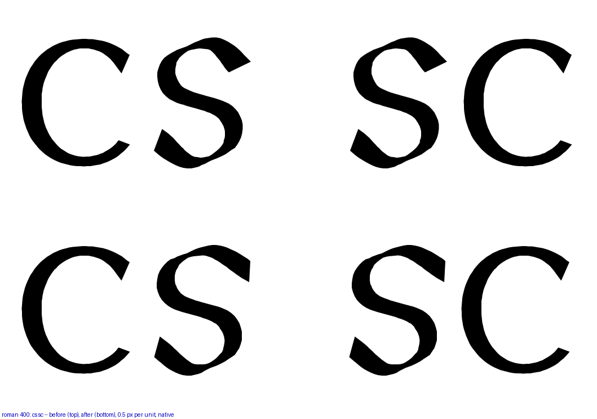
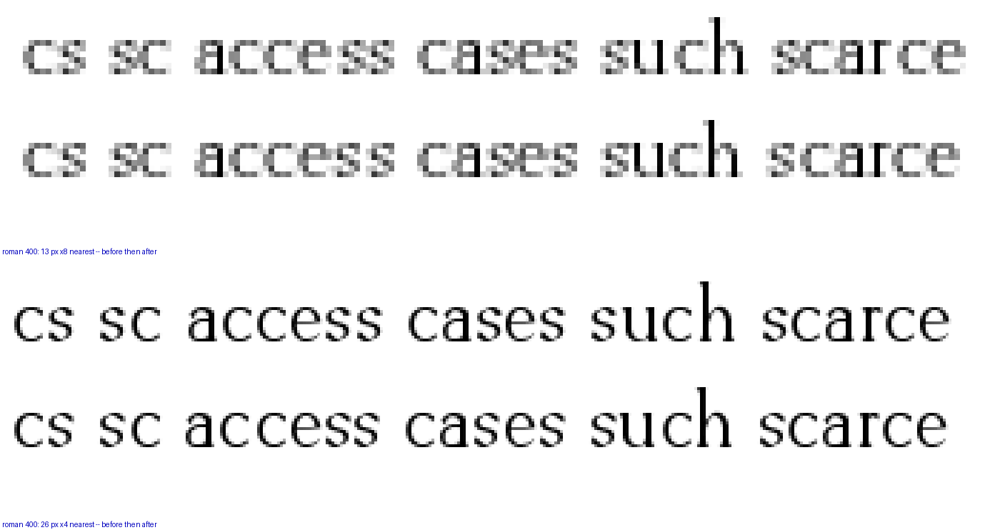
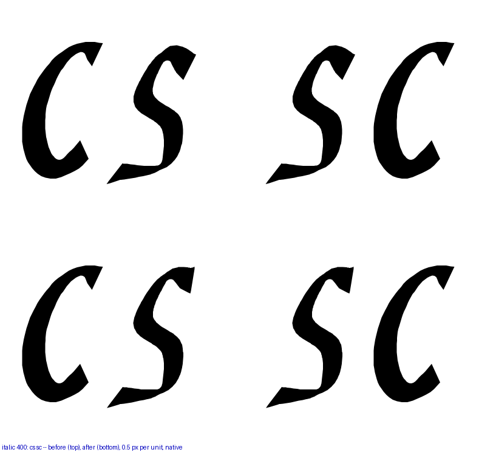
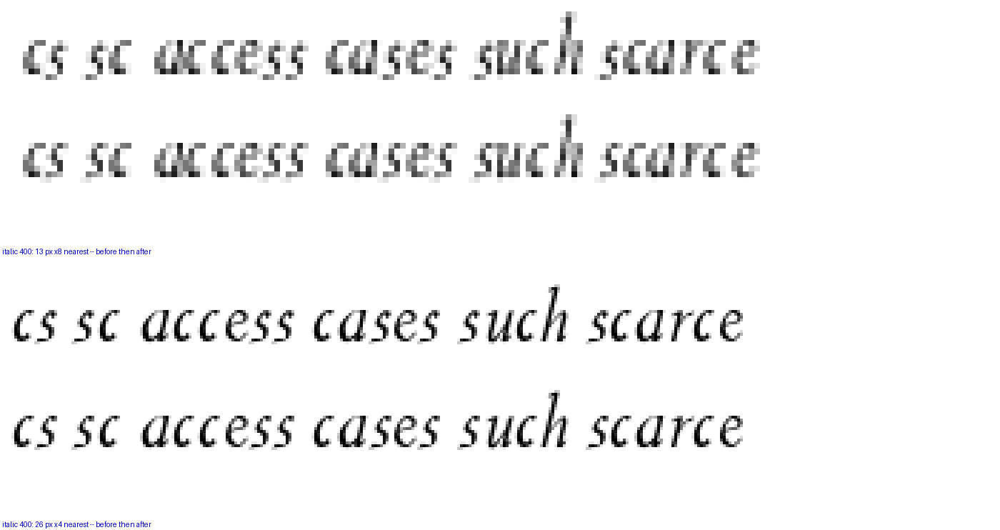
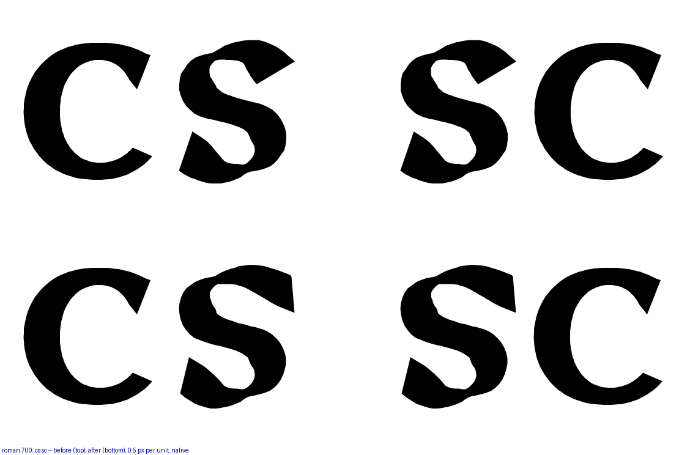
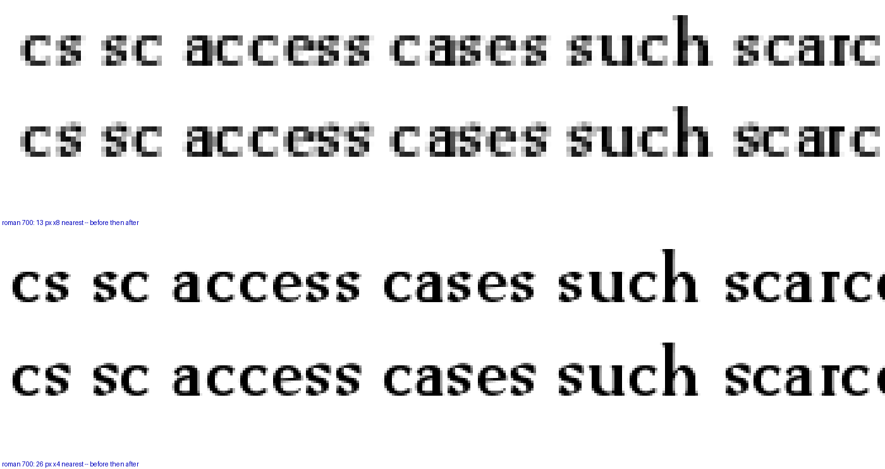
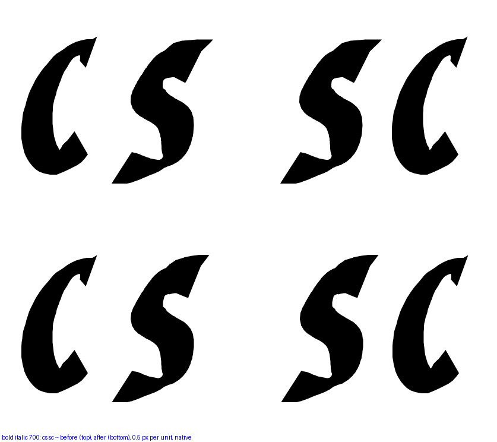
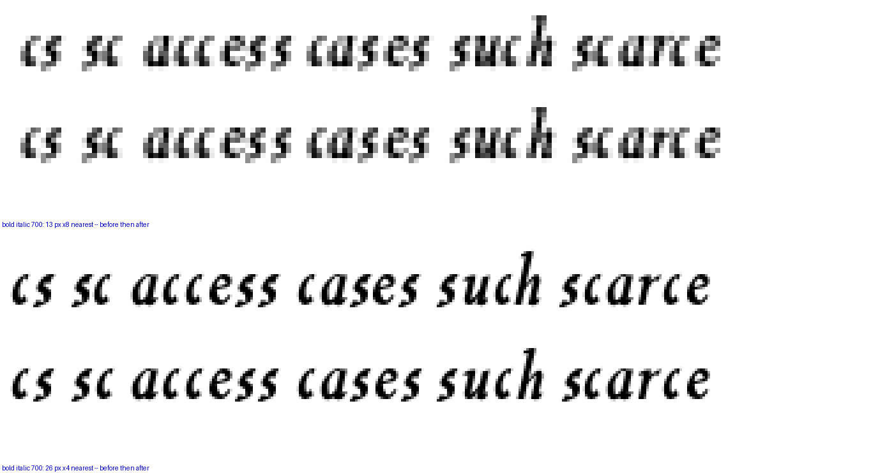
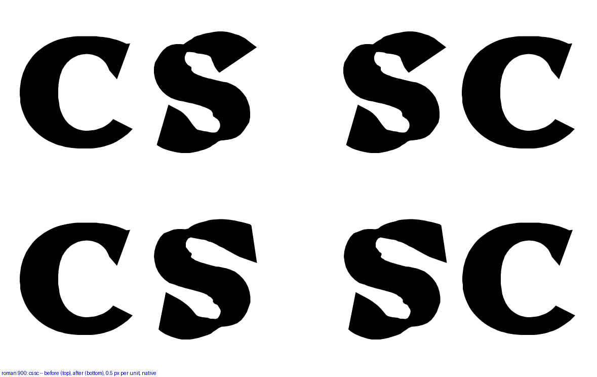
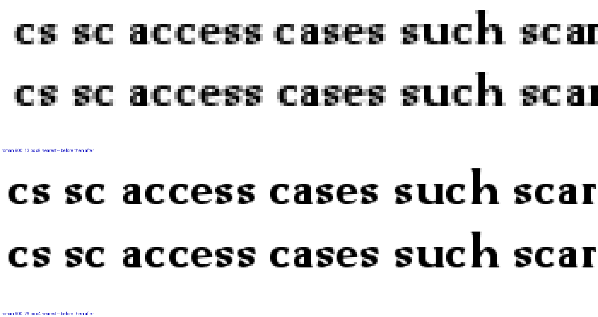
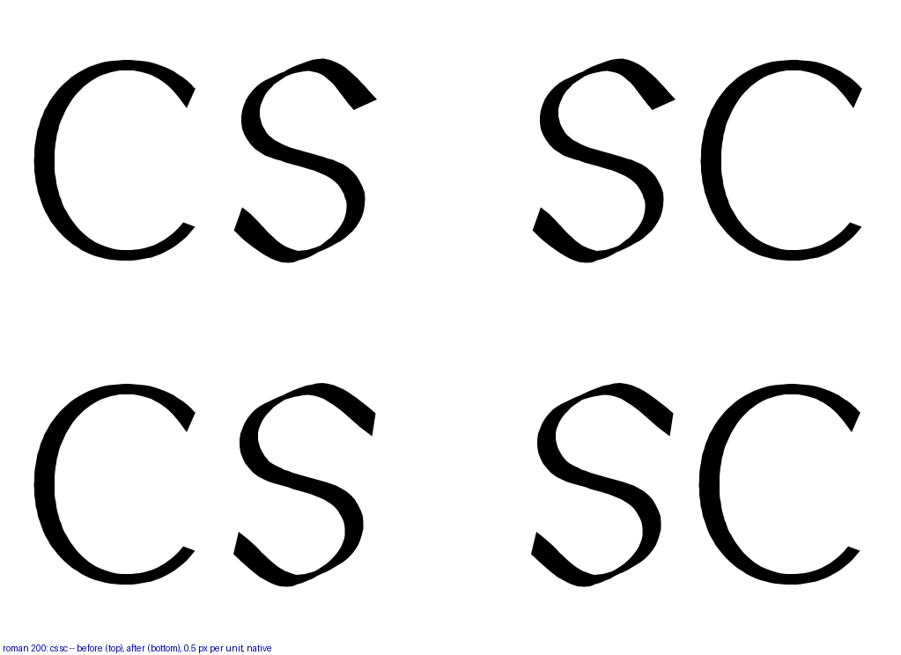
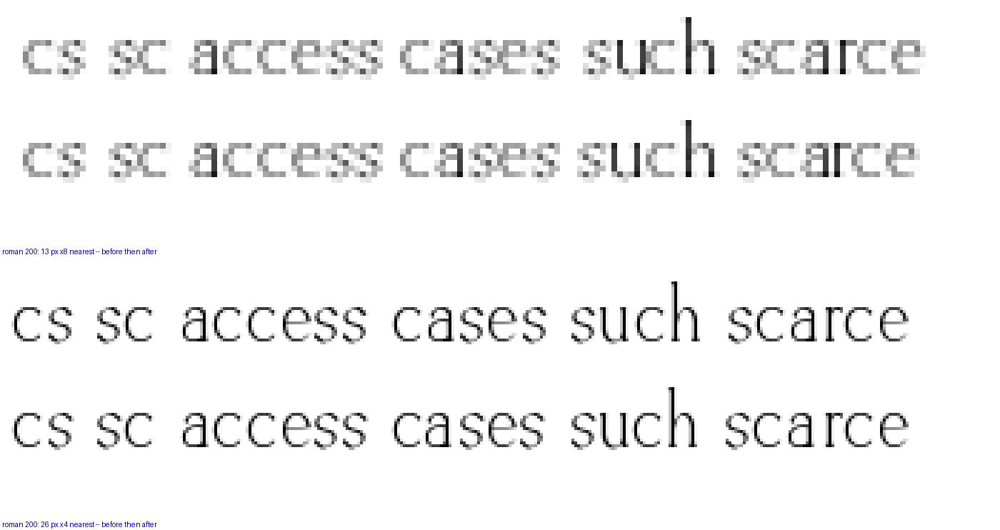